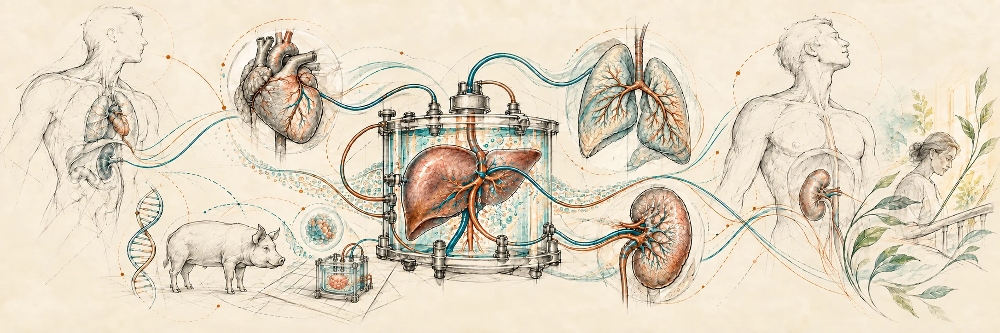

Oxygen continuity. Across every transition.
The cell, the organ and the organism each change their oxygen demand. BHOC Transplant asks whether a characterized oxygen carrier, with molecularly responsive oxygen release, can help sustain function from donor care through cooling, warming, transport, implantation and recovery.
Research concept across separate donor, ex-vivo and recipient protocols. A P50 near 40 mmHg at 37°C is described for historical HBOC-201; product-specific BHOC behavior, transplant outcomes and time gained remain to be established.
A journey with separate questions.
The route from donor to recipient crosses distinct scientific, ethical and clinical settings. Enter where you need the detail.
Follow the organ
Six connected stages, multiple organ sources, and a separate recipient path. Each stage opens its own Evidence and Concept notes.
Explore the journey ↗02 / BiologyStart at the molecule
Oxygen affinity, temperature and local demand define questions to measure. Historical carrier findings are separated from BHOC-specific validation.
Explore the science ↗03 / SourcesSee what is known
Explore transplant-specific historical and external studies while keeping BHOC research proposals clearly labelled.
Open evidence ↗Updates with a source trail.
A focused selection on organ preservation and transplantation research.
BHOC Transplant goes live
The research journey now connects donor, organ and recipient paths without treating a hypothesis as clinical evidence.
Read update ↗19 September 2026 · Evidence briefMachine perfusion research
External liver, kidney and lung studies are mapped as transplant research context. They are not BHOC efficacy evidence.
Read update ↗One organ. One protocol. A measurable question.
Begin with product characterization and controlled ex-vivo work, then assess further pathways separately.